유지보수 및 인수인계 문서
대상 저장소: feed-mina/MIMOcopilot/screen-code-handover
문서 안내
항목
내용
대상
React 기반 가상 메이크업 웹앱을 처음 유지보수하는 개발자
활용 방법
먼저 전체 구조와 화면 흐름을 읽고, 이후 각 기능의 핵심 파일·API·데이터 노드를 따라가며 변경 위치를 찾습니다.
읽는 순서
1) 전체 구조 → 2) 화면과 컴포넌트 → 3) API → 4) DB 스키마와 ERD → 5) 유지보수 절차
확인 범위
mimo-frontend/src의 실제 라우트와 컴포넌트, 저장소에 포함된 이미지/문서, 로컬 실행 결과
제외된 항목
Spring Boot 서버 소스, MySQL 마이그레이션/모델, localhost:8000 AI 서버 구현, 배포 인프라 정의
빠른 이동
전체 구조
MIMO의 현재 저장소는 React 프런트엔드만 포함 합니다. 화면 이동, 인증 토큰 보관, Firebase 기반 읽기/쓰기, 그리고 로컬 AI 서버 호출은 프런트엔드 코드에서 직접 처리합니다. README에는 Spring Boot, MySQL, Node.js AI 서버가 언급되지만, 해당 구현 소스는 이 저장소에 없습니다.
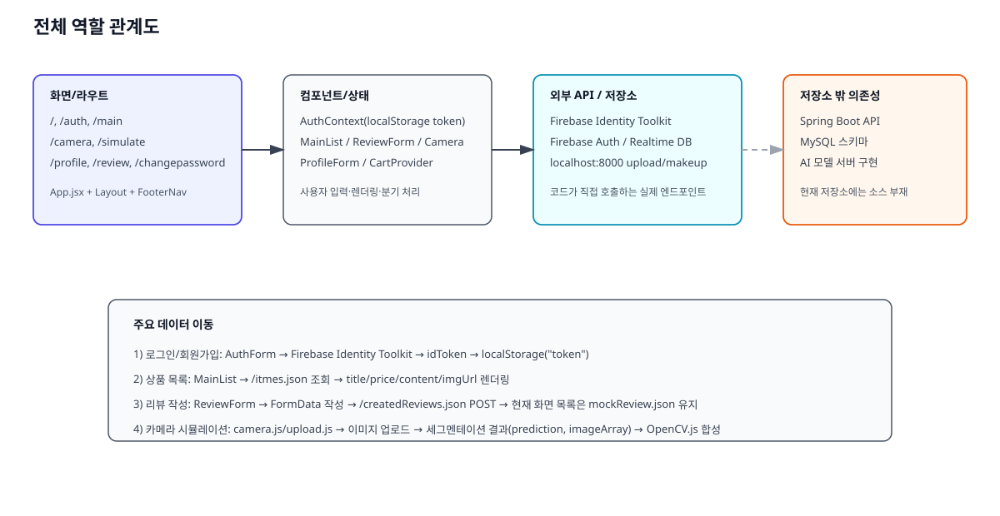
계층별 역할
계층
실제 위치
역할
프런트엔드 라우팅
/home/runner/work/MIMO/MIMO/mimo-frontend/src/App.jsx인증 상태에 따라 접근 가능한 페이지를 나누고, 공통 레이아웃 안에서 페이지를 렌더링합니다.
공통 레이아웃
components/Layout/*상단 로고/로그인 버튼, 하단 아이콘 네비게이션을 제공하며 실제 주요 진입점은 /main, /camera, /profile, /review입니다.
인증 상태
store/auth-context.jsxFirebase Identity Toolkit에서 받은 idToken을 localStorage의 token 키에 저장하고 로그인 여부를 계산합니다.
데이터 조회/저장
components/Main/*, components/Review/*, components/Cart/*, data/api.jsxFirebase Realtime Database의 JSON 노드에 직접 요청합니다.
AI 시뮬레이션
components/Modeling/camera.js, components/Modeling/upload.js촬영/업로드한 이미지를 localhost:8000/api/v1/upload, localhost:8000/api/v1/makeup으로 보내고, 응답을 OpenCV.js로 합성합니다.
저장소 밖 시스템
README에만 언급
Spring Boot, MySQL, AI 모델 서버는 현재 저장소만으로는 검증할 수 없습니다.
실제 데이터 이동
로그인/회원가입 : AuthForm이 Firebase Identity Toolkit REST API를 호출하고, 응답의 idToken을 AuthContext.login()에 넘깁니다. 상품 목록 : MainList가 /itmes.json을 읽어 추천 상품 카드 목록을 렌더링합니다. 리뷰 작성 : ReviewForm이 FormData를 만들어 /createdReviews.json에 POST하지만, 같은 화면의 리뷰 목록은 mockReview.json을 읽기 때문에 자동 반영되지 않습니다. 카메라 기능 : camera.js와 upload.js가 업로드 API의 path, 메이크업 API의 prediction, imageArray를 받아 클라이언트에서 색을 입힙니다.
저장소에서 확인한 구조적 주의점
FooterNav와 MainNavigation에는 /cart 링크가 있지만 App.jsx에는 /cart 라우트가 없습니다. 현재 클릭 시 와일드카드 경로 처리로 /main으로 돌아갑니다.data/APIUtils.js는 ../constants를 import하지만 해당 파일이 없고, 현재 앱 런타임에서는 이 모듈이 연결되지 않습니다.camera.js는 함수형 컴포넌트 안에 this.setState를 사용해 현재 코드 그대로는 정상 동작 보장이 어렵습니다.mimo-modeling 폴더에는 분석 가능한 소스가 없습니다.
화면과 컴포넌트
화면 1. 홈 /
홈 화면은 서비스 소개 이미지와 가입 안내 문구만 보여주는 랜딩 페이지입니다. props.authenticated가 참이면 useEffect에서 /main으로 이동하도록 작성되어 있지만, 현재 App.jsx에서 해당 props는 전달하지 않습니다.
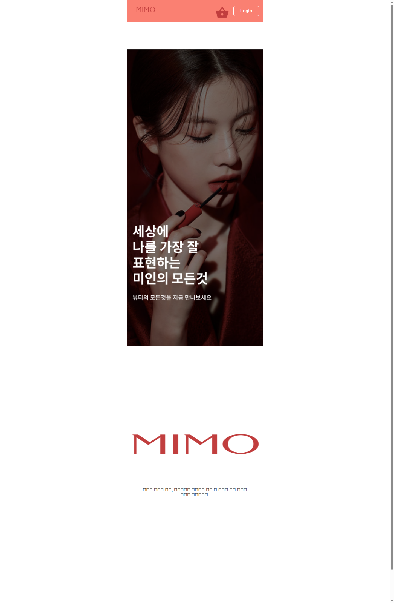
핵심 파일과 기능
파일
책임
기능에서 하는 일
components/Home/Home.jsx랜딩 페이지 렌더링
서비스 인트로 이미지, 로고, 약관 안내 문구를 출력합니다.
App.jsx루트 라우팅
/ 경로에서 Home을 렌더링합니다.
components/Layout/Layout.jsx공통 외곽
홈 화면도 동일한 상·하단 네비게이션 레이아웃 안에 배치합니다.
함수·컴포넌트 계약
대상
입력
처리
반환/부수 효과
Home(props)props.authenticated(불리언, 선택적)최초 렌더링 시 인증됨으로 판단하면 navigate('/main')을 시도합니다.
JSX를 반환하고, 조건이 맞으면 라우트 이동 부수 효과를 냅니다.
화면 연결
입력 위치 : 직접 입력 요소는 없습니다. 사용자 행동 : 상단 로고, 하단 네비게이션을 통해 다른 화면으로 이동합니다. 결과 표시 영역 : 중앙 인트로 이미지와 로고, 하단 약관 안내 텍스트입니다.
사용 API / DB
이 화면은 API를 직접 호출하지 않습니다.
화면 2. 인증 /auth
인증 화면은 이메일/비밀번호 로그인과 회원가입을 같은 폼에서 전환하며, 별도로 Google 팝업 로그인 버튼을 제공합니다. 로그인 성공 시 idToken을 저장하고 /main으로 이동합니다.
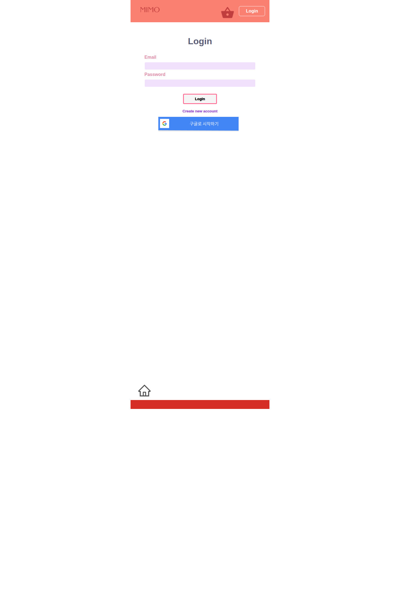
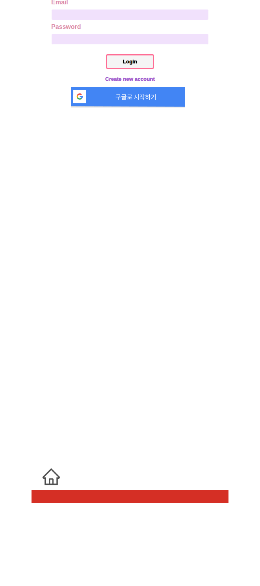
핵심 파일과 기능
파일
책임
기능에서 하는 일
pages/AuthPage.jsx페이지 래퍼
인증 라우트에서 AuthForm만 렌더링합니다.
components/Auth/AuthForm.jsx인증 입력과 분기 처리
로그인/회원가입 URL 분기, Firebase REST 요청, Google 팝업 로그인을 수행합니다.
store/auth-context.jsx인증 상태 저장
토큰을 localStorage에 저장하고 isLoggedIn을 계산합니다.
fbase.jsFirebase 앱 초기화
Firebase Auth 인스턴스를 만들고 Google 팝업 로그인에 사용합니다.
함수·컴포넌트 계약
대상
입력
처리
반환값 / 부수 효과
switchAuthModeHandler()없음
isLogin 상태를 반전합니다.버튼 문구와 제출 URL이 바뀝니다.
submitHandler(event)폼의 email, password
isLogin이 참이면 accounts:signInWithPassword, 거짓이면 accounts:signUp을 호출합니다.성공 시 authCtx.login(data.idToken), navigate('/main'); 실패 시 alert를 띄웁니다.
onSocialClick()없음
GoogleAuthProvider로 팝업 로그인을 시도합니다.성공 시 data.user를 내부 state에 저장하지만 현재 후속 화면 이동은 없습니다.
AuthContext.login(token)token 문자열state와 localStorage['token']을 함께 갱신합니다.
이후 보호 라우트 접근 가능 상태가 됩니다.
동작 흐름도
사용자가 이메일과 비밀번호를 입력합니다.
조건 분기 : isLogin이 true면 로그인 API, false면 회원가입 API를 호출합니다. 응답이 성공이면 JSON을 읽고 idToken을 저장한 뒤 /main으로 이동합니다.
응답이 실패면 Authentication failed! 예외를 만들어 alert로 노출합니다.
Google 버튼은 별도 병렬 경로이며, Firebase JS SDK의 팝업 인증을 사용합니다.
역할 관계
화면 요소 Email/Password 입력칸 → emailInputRef, passwordInputRef
로그인/가입 버튼 → submitHandler() → Firebase Identity Toolkit Google 버튼 → signInWithPopup(authService, provider) 성공 결과 → auth-context.jsx의 token, isLoggedIn 변경 → 보호 라우트 열림
사용 API
메서드
경로
요청 필드
코드가 실제 사용하는 응답 필드
사용 위치
POST
https://identitytoolkit.googleapis.com/v1/accounts:signInWithPassword?key=...email, password, returnSecureTokenidToken로그인 제출
POST
https://identitytoolkit.googleapis.com/v1/accounts:signUp?key=...email, password, returnSecureTokenidToken회원가입 제출
SDK popup
Firebase Auth Google provider
없음
data.userGoogle 소셜 로그인
읽거나 쓰는 데이터
저장소
키/필드
읽기/쓰기
설명
localStoragetoken쓰기/읽기/삭제
인증 토큰 영속화
Firebase Auth currentUser
displayName, photoURL 등읽기
프로필 화면에서 다시 사용
화면 3. 메인 상품 목록 /main
메인 화면은 이벤트 배너와 추천 상품 목록을 렌더링합니다. 데이터는 Firebase Realtime Database의 /itmes.json에서 가져오며, 로딩/오류/정상 상태가 분기됩니다.
핵심 파일과 기능
파일
책임
기능에서 하는 일
pages/Mainpages.jsx페이지 래퍼
실질적인 데이터 처리는 하지 않고 MainList를 렌더링합니다.
components/Main/MainList.jsx상품 목록 로딩과 렌더링
/itmes.json 호출, JSON을 배열로 변환, 상품 카드 UI를 만듭니다.
components/Layout/nav/FooterNav.jsx주요 진입점 제공
하단 홈/카메라/리뷰/프로필 아이콘으로 이동합니다.
함수·컴포넌트 계약
대상
입력
처리
반환값 / 부수 효과
MainList()props는 실질적으로 미사용
마운트 시 fetchItems()를 실행합니다.
JSX를 반환하고 내부 state(items, isLoading, httpError)를 갱신합니다.
fetchItems()없음
/itmes.json 응답을 순회해 {id,title,price,content,imgUrl} 배열로 변환합니다.성공 시 목록을 그리며, 실패 시 오류 문구를 화면에 표시합니다.
MainListItem({ item })item.Url, item.imgUrl, item.title, item.price, item.content카드 단위 표시를 만듭니다.
<a> 링크와 상품 요약 영역을 반환합니다.
동작 흐름도
화면 진입 시 isLoading=true로 시작합니다.
Firebase 요청을 보냅니다.
실패 분기 : response.ok가 거짓이면 오류를 던지고 httpError를 렌더링합니다. 성공 분기 : 각 노드를 상품 카드용 구조로 변환해 items에 저장합니다. 로딩이 끝나면 이벤트 배너와 상품 리스트를 출력합니다.
화면 연결
상품 이미지/제목/가격/설명 → responseData[key].imgUrl/title/price/content 상품 카드 링크 → item.Url을 사용하지만 현재 데이터 적재 시 Url 필드는 매핑하지 않아 실제 링크가 비어 있을 가능성이 큽니다. 오류 영역 → 예외 메시지 문자열을 그대로 렌더링합니다.
사용 API / DB
메서드
경로
요청
응답에서 화면이 쓰는 필드
사용 위치
GET
https://mimo-49f6d-default-rtdb.firebaseio.com/itmes.json없음
{[id]: {title, price, content, imgUrl}}추천 상품 목록
읽는 데이터 노드
노드
필드
설명
/itmes/{itemId}title, price, content, imgUrl메인 화면 카드 구성에 사용합니다.
화면 4. 카메라 시뮬레이션 /camera
카메라 화면은 웹캠을 열고 현재 프레임을 캔버스에 그린 뒤, 업로드/메이크업 API를 순차 호출해 립 또는 헤어 색상을 입히려는 목적의 화면입니다. 현재 저장소 코드 기준으로는 가장 복잡하지만 구현 미완성 흔적도 가장 많습니다.
핵심 파일과 기능
파일
책임
기능에서 하는 일
components/Modeling/camera.js웹캠 촬영형 시뮬레이터
브라우저 카메라 접근, 캔버스 캡처, 업로드/메이크업 API 호출, 색상/부위 선택 UI를 담당합니다.
components/Modeling/upload.js파일 업로드형 시뮬레이터
이미지 파일 선택, 미리보기, 업로드 후 OpenCV.js 합성 흐름을 class component로 구현합니다.
components/Modeling/constants.jsx링크 상수
CAMERAIMAGE, PROD 등 시뮬레이션 관련 링크 값을 제공합니다.
함수·컴포넌트 계약
대상
입력
처리
반환값 / 부수 효과
getVideo()없음
navigator.mediaDevices.getUserMedia({video:{width:1080,height:1080}})를 호출합니다.성공 시 <video>에 stream을 연결하고, 실패 시 콘솔에만 에러를 남깁니다.
takePhoto()현재 비디오 프레임
캔버스에 프레임을 그려 data URL을 만들고 FormData에 file을 추가해 업로드 API를 호출합니다.
hasPhoto=true, 업로드 요청, 이후 메이크업 요청 부수 효과가 발생합니다.
ColorChange(event)event.target.value (#RRGGBB)선택 색을 state에 저장합니다.
이후 Apply 단계에서 사용됩니다.
featureChange(event)lip 또는 hair선택 부위를 state에 저장합니다.
이후 Apply 단계 조건 분기에 사용됩니다.
Upload.onClickHandler()선택한 파일
업로드 API → 메이크업 API를 순차 호출합니다.
path, prediction, image를 class state에 넣습니다.
Options.onApplyHandler()prediction, image, feature, color부위 id에 따라 마스크를 만들고 OpenCV.js로 원본 이미지와 합성합니다.
canvasOutput에 결과를 렌더링합니다.
실제 조건 분기를 담은 흐름도
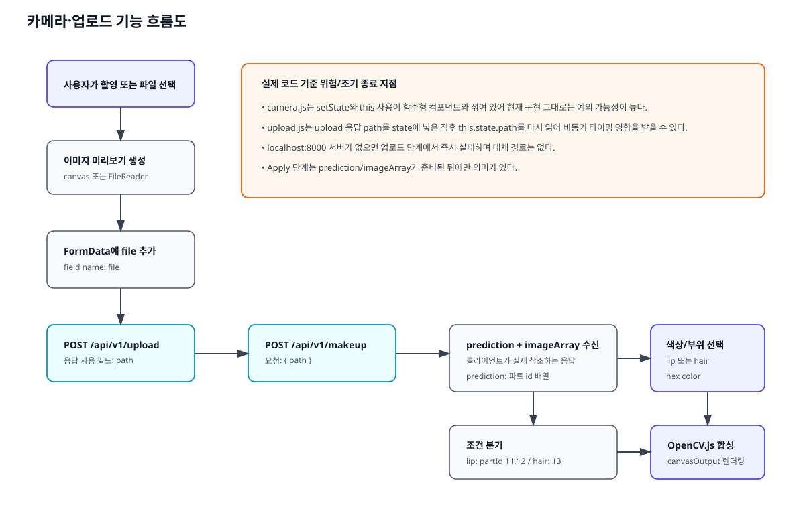
화면 요소와 코드 연결
화면 요소
연결된 상태/함수
입력
결과
Take a Picture 버튼takePhoto()현재 비디오 프레임
캔버스 이미지 생성, 업로드 시도
Select feature 드롭다운featureChange() / Options.handleFeatureChange()lip, hairApply 때 칠할 파트 id 조건이 달라집니다.
색상 선택 input
ColorChange() / Options.handleColorChange()hex 색상 문자열
RGB로 변환되어 합성 색으로 사용됩니다.
Apply 버튼Options.onApplyHandler()선택한 부위와 색, 예측 배열
canvasOutput에 합성 이미지를 그립니다.
사용 API
메서드
경로
요청 필드
코드가 실제 쓰는 응답 필드
사용 위치
POST
http://localhost:8000/api/v1/uploadFormData(file)path촬영/업로드 직후
POST
http://localhost:8000/api/v1/makeup{ path }prediction, imageArray업로드 성공 후
읽거나 쓰는 데이터
이 화면은 브라우저 state와 캔버스만 직접 갱신하며, Firebase DB에는 쓰지 않습니다.
유지보수 메모
camera.js는 setFile(file) 직후 image_file state를 바로 읽어 FormData에 넣기 때문에 타이밍 이슈가 있습니다. 같은 파일에서 this.setState(...)를 사용하고 있어 함수형 컴포넌트 문맥과 맞지 않습니다.
upload.js의 OpenCV 합성 로직은 실제 기능 설명 근거로 유효하지만, localhost:8000 구현이 없어 서버 계약의 전체 스펙은 확인할 수 없습니다.
화면 5. 시뮬레이션 결과/추천 /simulate
/simulate는 로그인 사용자 정보를 콘솔에 출력하고, 촬영 이미지 자리와 추천 상품 이미지 링크를 배치한 정적 성격의 화면입니다. 현재 구현에서는 실제 시뮬레이션 결과를 계산하기보다 다음 행동을 안내하는 구성에 가깝습니다.
핵심 파일과 기능
파일
책임
기능에서 하는 일
components/Modeling/Simulate.jsx추천/후속 행동 화면
Firebase currentUser의 provider 정보를 콘솔에 출력하고 이미지/상품 링크를 보여줍니다.
components/Modeling/constants.jsx링크 정의
CAMERAIMAGE, PROD 상수를 /cameraimage, /prod:id 같은 링크로 제공합니다.
함수·컴포넌트 계약
대상
입력
처리
반환값 / 부수 효과
Simulate()Firebase user
user !== null일 때 프로필 관련 값과 providerData를 읽어 콘솔 로그를 남깁니다.추천 상품 이미지와 텍스트가 포함된 JSX를 반환합니다.
사용 API / DB
직접 네트워크 요청은 없고, Firebase Auth의 현재 로그인 사용자 객체만 읽습니다.
화면 6. 프로필 /profile
프로필 화면은 로그인한 사용자의 프로필 사진과 이름, 그리고 비밀번호 변경/장바구니/리뷰 진입 링크를 제공합니다. 표시 데이터는 Firebase Auth의 currentUser에서 읽습니다.
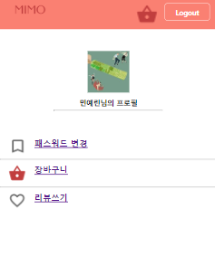
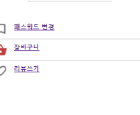
핵심 파일과 기능
파일
책임
기능에서 하는 일
components/Profile/UserProfile.jsx프로필 헤더 렌더링
photoURL, displayName을 읽어 프로필 영역을 출력합니다.
components/Profile/ProfileContent.jsx하위 메뉴
/cart, /review 링크를 배치합니다.
App.jsx접근 제어
로그인 상태일 때만 /profile 라우트를 노출합니다.
함수·컴포넌트 계약
대상
입력
처리
반환값 / 부수 효과
UserProfile()authCtx.isLoggedIn, authService.currentUser로그인 상태면 프로필 이미지와 이름을 출력합니다.
JSX를 반환합니다.
ProfileContent()없음
장바구니/리뷰 링크 블록을 표시합니다.
실제 라우트 존재 여부와 무관하게 링크를 렌더링합니다.
화면 연결
프로필 사진 영역 → authService.currentUser.photoURL 이름 제목 → authService.currentUser.displayName 패스워드 변경 메뉴 → /changepassword 리뷰쓰기 메뉴 → /review 장바구니 메뉴 → /cart (현재 App 라우트 미연결)
사용 API / DB
네트워크 호출은 없고 Firebase Auth 메모리 상태만 읽습니다.
화면 7. 비밀번호 변경 /changepassword
비밀번호 변경 화면은 새 비밀번호 한 개만 입력받아 Firebase Identity Toolkit의 계정 업데이트 API를 호출합니다. 성공/실패 분기 메시지 없이, 요청 완료 후 홈으로 이동하는 단순 흐름입니다.
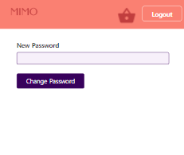
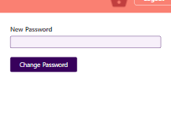
핵심 파일과 기능
파일
책임
기능에서 하는 일
components/Profile/ProfileForm.jsx비밀번호 변경 폼
새 비밀번호를 읽어 계정 업데이트 REST API를 호출합니다.
store/auth-context.jsx토큰 공급
현재 토큰을 요청 본문 idToken으로 전달합니다.
함수·컴포넌트 계약
대상
입력
처리
반환값 / 부수 효과
submitHandler(event)new-password 입력값, authCtx.tokenaccounts:update API에 idToken, password, returnSecureToken:false를 전송합니다.응답 본문 확인 없이 navigate('/', {replace:true})를 호출합니다.
사용 API
메서드
경로
요청 필드
코드가 실제 쓰는 응답 필드
사용 위치
POST
https://identitytoolkit.googleapis.com/v1/accounts:update?key=...idToken, password, returnSecureToken:false없음
비밀번호 변경 제출
화면 8. 리뷰 /review
리뷰 화면은 이미지 첨부, 닉네임, 별점, 본문을 입력받는 작성 폼과 리뷰 목록을 함께 보여줍니다. 하지만 목록은 Firebase에서 다시 읽지 않고 mockReview.json을 사용하므로, 저장 성공과 목록 갱신이 연결되어 있지 않습니다.
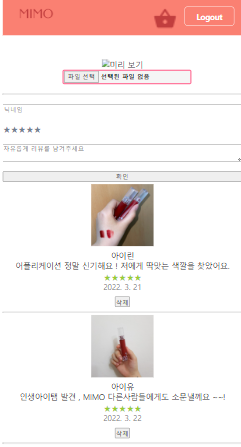
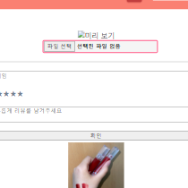
핵심 파일과 기능
파일
책임
기능에서 하는 일
components/Review/Review.jsx리뷰 화면 조립
ReviewForm과 ReviewList를 배치하고 삭제 핸들러를 가집니다.
components/Review/ReviewForm.jsx작성 폼
파일, 닉네임, 별점, 리뷰 본문을 state에 모아 FormData를 전송합니다.
components/Review/FileInput.jsx이미지 선택과 미리보기
파일 객체를 부모로 올리고 URL.createObjectURL()로 미리보기를 만듭니다.
components/Review/RatingInput.jsx / Rating.jsx별점 입력
hover/select 상태를 별 문자 UI로 보여줍니다.
components/Review/ReviewList.jsx목록 표시
mockReview.json 배열을 순회해 항목을 렌더링합니다.
data/api.jsx리뷰 API helper
/createdReviews.json POST와 /review.json GET helper를 제공합니다.
함수·컴포넌트 계약
대상
입력
처리
반환값 / 부수 효과
handleChange(name, value)필드명, 값
폼 state의 해당 키만 갱신합니다.
values state가 변경됩니다.
handleSubmit(e)values.content, values.imgUrl, values.nickname, values.ratingFormData를 만들고 createReviews(formData)를 호출합니다.성공 후 입력값을 초기화합니다.
FileInput.handleChange(e)선택한 파일
첫 번째 파일을 부모 onChange로 전달합니다.
미리보기 URL 생성의 입력이 됩니다.
RatingInput현재 점수
hover와 click 이벤트를 별점 값으로 변환합니다.
부모의 rating을 갱신합니다.
handleDelete(id)삭제할 review id
mock 배열에서 해당 항목을 제외합니다.
화면 목록만 바뀌고 서버 삭제는 하지 않습니다.
실제 분기 흐름
사용자가 이미지, 닉네임, 별점, 내용을 입력합니다.
파일 선택 시 FileInput이 브라우저 로컬 미리보기를 만듭니다.
제출 시 FormData를 만들어 /createdReviews.json으로 보냅니다.
성공 후 폼 state는 초기화됩니다.
별도 분기 : 화면 하단 목록은 네트워크 응답과 무관하게 mockReview.json만 보여줍니다. 삭제 버튼은 서버가 아니라 브라우저 메모리 목록만 지웁니다.
역할 관계도
작성 입력 필드 → ReviewForm.values
이미지 선택 → FileInput → values.imgUrl(File 객체)
별점 클릭 → RatingInput → values.rating
제출 버튼 → createReviews() → /createdReviews.json
목록 영역 → mockReview.json → ReviewListItem
사용 API
메서드
경로
요청 필드
코드가 실제 쓰는 응답 필드
사용 위치
POST
https://mimo-49f6d-default-rtdb.firebaseio.com/createdReviews.jsonFormData(content, imgUrl, nickname, rating)없음
리뷰 작성 저장
GET
https://mimo-49f6d-default-rtdb.firebaseio.com/review.json없음
helper는 body 전체를 반환하지만 현재 화면 미사용
잠재적 리뷰 조회 helper
API(Application Programming Interface, 프로그램의 요청·응답 창구)
현재 저장소에서 실제로 확인된 API만 정리했습니다. 응답 필드는 코드가 실제 읽는 값만 적었습니다.
영역
메서드
경로
요청 필드
응답 필드(실사용)
호출 파일
로그인
POST
accounts:signInWithPasswordemail, password, returnSecureTokenidTokencomponents/Auth/AuthForm.jsx
회원가입
POST
accounts:signUpemail, password, returnSecureTokenidTokencomponents/Auth/AuthForm.jsx
비밀번호 변경
POST
accounts:updateidToken, password, returnSecureToken:false없음
components/Profile/ProfileForm.jsx
상품 목록
GET
/itmes.json없음
title, price, content, imgUrlcomponents/Main/MainList.jsx
리뷰 저장
POST
/createdReviews.jsoncontent, imgUrl, nickname, rating없음
components/Review/ReviewForm.jsx, data/api.jsx
리뷰 조회 helper
GET
/review.json없음
body 전체
data/api.jsx
장바구니 주문
POST
/cart.jsonuser, orderedItems없음
components/Cart/Cart.jsx
피부 정보 helper
GET
/detail/1.json없음
body 전체
data/api.jsx
이미지 업로드
POST
http://localhost:8000/api/v1/uploadFormData(file)pathcomponents/Modeling/camera.js, components/Modeling/upload.js
메이크업 예측
POST
http://localhost:8000/api/v1/makeup{ path }prediction, imageArraycomponents/Modeling/camera.js, components/Modeling/upload.js
API 유지보수 포인트
localhost:8000 계약은 프런트 코드 기준으로만 확인됐고 서버 구현은 없습니다. 리뷰 저장은 FormData를 보내면서도 Content-Type: application/json 헤더를 설정해 계약 불일치 가능성이 있습니다.
APIUtils.js는 별도 백엔드(API_BASE_URL) 연동 의도를 보이지만 현재 앱에서 활성 연결되지 않습니다.
DB(Database, 데이터베이스) 스키마와 ERD(Entity Relationship Diagram, 데이터 관계도)
이 저장소에는 SQL 마이그레이션, JPA 엔티티, Prisma/TypeORM 모델 같은 정식 스키마 원본이 없습니다 . 따라서 아래 스키마는 프런트 코드가 읽고 쓰는 Firebase Realtime Database 노드 기준 상세 스키마 입니다.
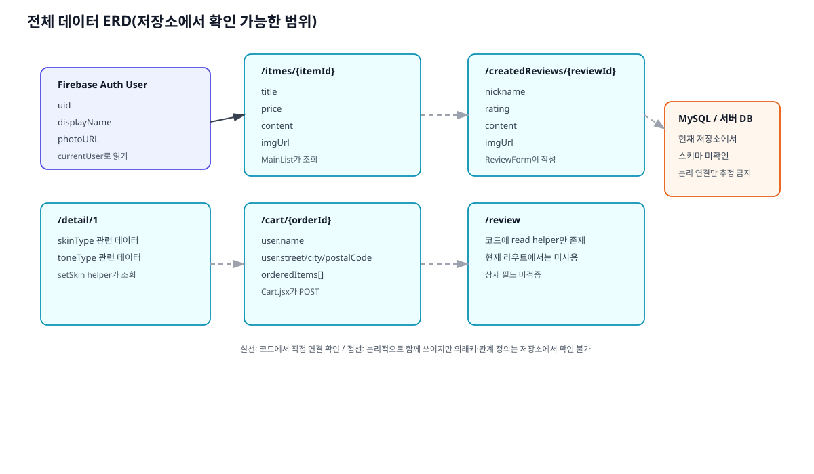
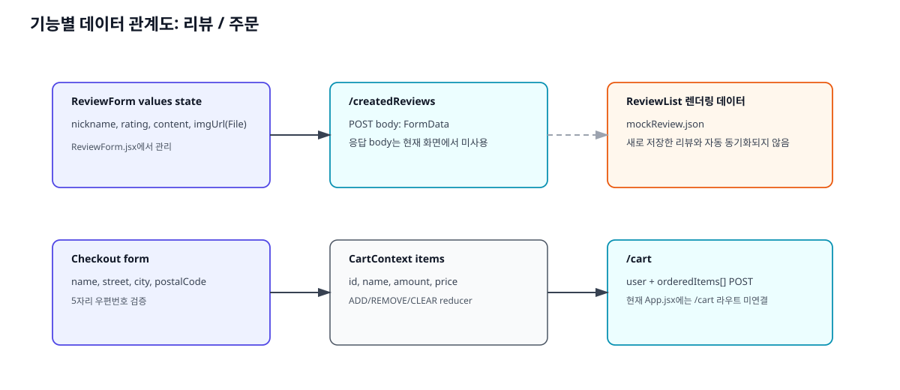
상세 스키마
노드
필드
타입(추정)
필수 여부
기본값/제약
사용 화면
/itmes/{itemId}titlestring
메인 렌더링상 사실상 필수
없음
/main
/itmes/{itemId}pricestring 또는 number
사실상 필수
없음
/main
/itmes/{itemId}contentstring
사실상 필수
없음
/main
/itmes/{itemId}imgUrlstring(URL)
사실상 필수
없음
/main
/createdReviews/{reviewId}nicknamestring
작성 시 필수로 기대
폼 초기값은 빈 문자열
/review
/createdReviews/{reviewId}ratingnumber 또는 string
작성 시 필수로 기대
초기값 0
/review
/createdReviews/{reviewId}contentstring
작성 시 필수로 기대
초기값 빈 문자열
/review
/createdReviews/{reviewId}imgUrlFile/문자열 경로 미확정
선택
초기값 null
/review
/cart/{orderId}user.namestring
주문 제출 시 필수 검증
공백 불가
장바구니 흐름
/cart/{orderId}user.streetstring
주문 제출 시 필수 검증
공백 불가
장바구니 흐름
/cart/{orderId}user.citystring
주문 제출 시 필수 검증
공백 불가
장바구니 흐름
/cart/{orderId}user.postalCodestring
주문 제출 시 필수 검증
길이 5
장바구니 흐름
/cart/{orderId}orderedItems[]array
주문 시 필수
아이템 구조는 context 기준
장바구니 흐름
/detail/1미상(skinType, toneType 관련)
object
미상
helper만 존재
현재 활성 화면 미연결
/review미상
object/array
미상
helper만 존재
현재 활성 화면 미연결
관계 해석 기준
실선 관계 : 프런트 코드에서 직접 요청/응답 또는 저장이 확인된 연결 논리 연결 : 화면 흐름상 함께 쓰이지만 외래키나 스키마 정의는 저장소에서 확인되지 않은 연결 미포함 관계 : README나 이미지 자산에만 존재하고 코드/스키마 원본이 없는 MySQL 관계
유지보수 및 운영 절차
1) 환경 설정
항목
실제 위치
설명
프런트엔드 루트
/home/runner/work/MIMO/MIMO/mimo-frontendCreate React App 기반 프로젝트입니다.
패키지 정의
mimo-frontend/package.jsonreact, react-router-dom, firebase, axios, react-webcam 등을 사용합니다.
환경 변수 예시
mimo-frontend/.envFirebase 관련 값이 들어 있지만 현재 형식은 일반 CRA .env 형식과 다르게 괄호가 포함되어 있습니다.
Firebase 초기화
mimo-frontend/src/fbase.js코드 안에 Firebase 설정이 하드코딩되어 있습니다.
로그인 상태 저장
브라우저 localStorage['token']
보호 라우트 조건에 사용됩니다.
2) 로컬 실행
실행 위치
명령
필요한 설정
성공 확인 방법
이번 분석에서 확인한 결과
mimo-frontendnpm installNode/npm
node_modules 생성실행 완료
mimo-frontendnpm start3000 포트 사용 가능
http://localhost:3000 개발 서버 열림실행 완료, 컴파일은 성공했지만 eslint/a11y 경고 다수 확인
mimo-frontendnpm run build동일
build/ 폴더 생성절차만 정리, 이번 문서 작성 중에는 미실행
mimo-frontendnpm test인터랙티브 watch 환경
테스트 러너 시작
절차만 정리, 저장소에 의미 있는 앱 테스트는 거의 없음
3) 변경 위치 찾기
변경하려는 기능
먼저 볼 파일
함께 따라갈 파일
로그인/회원가입
components/Auth/AuthForm.jsxstore/auth-context.jsx, fbase.js, App.jsx
메인 상품 목록
components/Main/MainList.jsxpages/Mainpages.jsx, Firebase /itmes.json 데이터
카메라/메이크업
components/Modeling/camera.jscomponents/Modeling/upload.js, components/Modeling/constants.jsx, 로컬 AI 서버
프로필/비밀번호 변경
components/Profile/UserProfile.jsxcomponents/Profile/ProfileContent.jsx, components/Profile/ProfileForm.jsx
리뷰
components/Review/ReviewForm.jsxcomponents/Review/FileInput.jsx, components/Review/ReviewList.jsx, data/api.jsx
하단 이동 경로
components/Layout/nav/FooterNav.jsxApp.jsx 라우트 정의
4) 변경 영향 포인트
인증 토큰 저장 방식을 바꾸면 App.jsx의 보호 라우트 전체가 영향받습니다.
Firebase DB 경로명을 바꾸면 MainList, ReviewForm, Cart가 모두 수정 대상입니다.
/cart 라우트를 복구하려면 App.jsx, MainNavigation.jsx, FooterNav.jsx, Cart 관련 provider 연결 여부를 함께 봐야 합니다. 시뮬레이션 서버 계약을 바꾸면 camera.js와 upload.js의 요청 필드와 OpenCV 후처리를 같이 조정해야 합니다.
5) 테스트·빌드
즉시 확인이 필요한 변경 : 화면 라우팅, 인증, Firebase 요청, 카메라 브라우저 권한. 기존 도구 : CRA 기본 npm start, npm run build, npm test. 수동 확인 우선 기능 : 로그인 성공 후 보호 라우트 노출, 상품 목록 로딩, 리뷰 저장 요청, 카메라 권한 승인 후 촬영/업로드. 실행 결과와 절차 구분 : 이번 분석에서는 npm start로 앱을 실제 실행해 홈/인증/메인 화면을 캡처했고, 나머지 로그인 필요 화면은 저장소에 포함된 기존 스크린샷을 사용했습니다.
6) 배포·복구
현재 저장소에는 Dockerfile, CI/CD workflow, 배포 스크립트, 인프라 설정 파일이 없습니다. 따라서 현재 확인 가능한 범위에서 말할 수 있는 복구 절차는 프런트 개발 서버 재실행 및 외부 의존성 점검 까지입니다.
프런트 화면이 뜨지 않으면 mimo-frontend에서 npm install 후 npm start를 다시 실행합니다.
로그인/DB 연동이 실패하면 Firebase 설정값과 네트워크 접근 가능 여부를 먼저 확인합니다.
카메라 시뮬레이션이 실패하면 localhost:8000 서버 기동 여부를 확인합니다. 이 저장소만으로는 해당 서버를 복구할 수 없습니다.
7) 증상별 문제 진단 가이드
증상
먼저 볼 지점
확인 내용
로그인 후 보호 화면이 안 열림
store/auth-context.jsx, App.jsxlocalStorage['token'] 저장 여부, isLoggedIn 계산 여부
로그인 팝업은 떴지만 이동이 없음
AuthForm.jsxGoogle 로그인 성공 후 navigate()를 호출하지 않는 현재 흐름 확인
장바구니 아이콘을 눌러도 화면이 안 바뀜
App.jsx/cart 라우트 부재로 와일드카드가 /main으로 돌리는지 확인
메인 상품이 비어 있음
MainList.jsx/itmes.json 응답 구조와 response.ok 확인
리뷰를 저장했는데 목록이 안 바뀜
Review.jsx, ReviewForm.jsx목록이 mockReview.json 기반이라 서버 응답과 연결되지 않은 구조 확인
카메라 촬영 후 적용이 안 됨
camera.js, upload.jslocalhost:8000 서버 상태, path 전달, prediction/imageArray 존재, this.setState 사용 여부
프로필 사진/이름이 비어 있음
UserProfile.jsx, Firebase AuthcurrentUser 정보가 실제로 채워지는 로그인 방식인지 확인
검수 결과
Markdown 본문에서 사용하는 모든 이미지 경로를 docs/handover/images/ 상대 경로로 맞췄습니다.
내부 링크는 명시적 anchor id(#architecture, #screen-auth 등)로 연결했습니다.
PDF는 같은 Markdown을 HTML로 렌더링한 뒤 생성하는 방식으로 만들 예정이며, 페이지 잘림과 이미지 누락 여부를 함께 확인합니다.